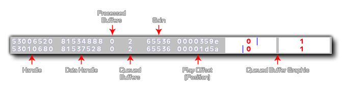

audio_debug(enable);
| Argument | Description |
|---|---|
| enable | Enable (set to true) or disable (false) audio debugging. |
Returns: N/A
This function can be used to display debug information about the audio system, with true switching it on and false to switch it off. When you are debugging audio in this way, the overlay will show the following information: 
- Handle - The OpenAL source handle (unique for every sound played)
- Data Handle - The OpenAL buffer handle (shows the same value for multiple sounds with the same source handle)
- Processed Buffers - how many buffers have been played
- Queued Buffers - how many buffers have been queued (and are still waiting to play)
- Gain - The gain value for the audio (0 - 65536)
- Play Offset - the sample position (current play position) into the current buffer
- Queued Buffers Bars - a small box diagram of the processed/queued buffers with the play offset (current position) drawn as a blue line
For synchronised groups of audio, you also have the function audio_sync_group_debug().
NOTE: This function does not work on the HTML5 target platform.
if (debug_mode)
{
audio_debug(true);
}
else
{
audio_debug(false);
}
The above code will switch on or off the audio debug overlay depending on whether the game is running in debug mode or not.